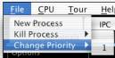

Process Scheduler
On a modern computer
system there can be many programs being executed at any one time. It’s the responsibility of the CPU
(Central Processing Unit) to actually execute the instructions for these
programs. However, with multiple programs somewhere between the start and
finish at the same time something has to keep track all these programs.
Tracking these programs includes knowing where they are up to, what they are
doing and what resources they own. One of the responsibilities of the operating
system is to keep track of this information. It does this by using
processes. Nearly all of the work,
in some operating systems all of the work, is performed by processes. The
concepts presented by RCOSjava includes:
- Processes
As mentioned
above, a process is an instance of running program.
- Process States
During its lifetime a process will move through a number of different
states. Each state has its own characteristics and there are limitations on
which state transitions make sense.
- Process Description
The operating
system must be able to keep track of processes and the resources they own. This
information is stored in a number of operating system data structures including
Process Control Blocks (PCBs).
- Operations on Processes
There are a number of standard operations that are performed with
operating systems, including creation, termination and switching.
- Process Scheduling
Typically
there are multiple processes on a computer, which must share the computers
resources, particularly the Central Processing Unit (CPU). Process Scheduling
deals with the decisions of how to share those resources amongst processes.
Process
A process is a program
in execution; process execution must progress in a sequential fashion.
In RCOSjava a process
includes:
- A program counter.
- A stack.
- A data section.
Process States
As a process executes,
it changes state:
- New: The process is being created.
- Running: Instructions are being executed.
- Waiting: The process is waiting for some
event (such as an I/O event) to occur.
- Ready: The process is waiting to be
assigned to a processor.
- Terminated: The process has finished
execution.
Process Description
The Process Control
Block is information associated with each process. Each process in RCOSjava contains the following information:
- Process ID,
- Process priority,
- Process state,
- Program counter,
- Stack Pointer,
- Base Pointer,
- Priority,
- Memory management information including
Code and Stack Pages,
- Accounting information including CPU
ticks, and
- I/O status information including file name
and file size.
To display the current
PCB of a process simply click on the process represented by a coloured circle
in the process scheduler. A type
example of the process scheduler running looks like:

This shows the two
processes, “Process 1” (“P1”, green circle) and “Process 2” (“P2”, blue
circle). By clicking on the
“Process 1” circle you get the separate process control block window:

By selecting these
options you can open up each of these categories:

Operations on Processes
Processes in RCOSjava
are created, undergo switching and are finally terminated.
Process Creation
RCOSjava creates a
process using the following steps:
- Reading in executable code of a program
from the file system,
- Allocation of a new process by the Process
Scheduler,
- Requesting and allocation if available of
memory, and finally
- Requesting and allocation if available of
a terminal to be used by the process.
To create new
processes go to the “File”, “New Process” menu:

This displays the
available executable files:

The options available
include whether or not to create a new terminal when loading the process
leaving selected “Automatically start terminal”. Either double click on the process name or select the
process name and hit “Open”. The
process will automatically start running.
Switching
Process and context
switching are closely related concepts, but they are not the same. It is important that the difference
between a process and a context switch is made.
Context
First, let’s define
what the context actually is. All CPUs contain a number of registers that
provide information about the current state of execution. Some of these were
mentioned previously include such registers as the program counter, stack
pointer and base pointer. It
is this information that specifies the current execution state of the CPU.
Context Switch
A context switch
involves saving the current context of the CPU and replacing it with another
context. What this does is saves the current program/process, allowing another
program/process and to run and then at a later stage the original process can
be restored by using its context. As far as the original program/process knows,
nothing interesting has happened.
Context switches
usually happen whenever there is an interrupt. There are four general types of
interrupts, software, hardware, error and timer.
Context is a hardware
concept; it is tied to the CPU of the system. Context switches are performed hundreds, thousands and even
millions of times a second and are usually supported by hardware in someway.
To view the current
CPU context go to the CPU Animator screen.
Process Switch
Process switching is
where the current running process is replaced by another process. This occurs
in a number of situations including:
- The current running process finishes.
- The current running process requests some
I/O and moves from the running to the waiting state.
- The current running process uses up its
time on the CPU and moves from the running to the ready state.
Since it involves
processes, remember processes are an operating system construct; a process
switch relies heavily on operating system code and data structures. The steps
involved in a process switch include:
- An Interrupt Occurs
All process switches will be initiated by an interrupt. When a process
finishes it usually executes a system call (implemented as a software
interrupt) called exit that destroys the process. When a processes share of
time on the CPU is finished this is indicated by a timer interrupt. When a
process moves from the blocked state to the ready state it is usually because
of an I/O interrupt. Moving from being executed to the blocked queue is usually
because of a request to do I/O (a software interrupt).
Since the process switch almost always starts with an interrupt the
first thing that happens is a context switch from the current running process
to the interrupt handler of the operating system.
- Saving Context
The context of
the current running process is copied to another section of memory from the
CPU.
- Restore the Context of the Operating
System
The interrupt
handler determines which part of the operating system will handle the
interrupt. Timer, software and I/O interrupts will be handled by different
sections of the operating system. However, some part of these operating system
sections will eventually initiate a process switch, which uses exactly the same
steps.
- Change the PCB of the Previously
Running Process
The process
control block is modified to represent its changed in state. The process could be going from running
to blocked, zombie, or ready.
- Move the PCB of the Old Running Process
The PCB of the process is moved to the queue associated with its new
state
In many cases
this will entail simply changing a pointer. Remember, it is important that this
process be very efficient so it can be done quickly. Copying large amounts of
data (e.g. the PCB) every time there is a process switch just wouldn’t make
good sense.
- Select Another Process from the Ready
Queue
This is a very important step. It is important because it can take a
long time (by far the largest portion of a process switch) but also because
which process is chosen can directly influence the performance of the
- Change the PCB of the New Process
The new
process’s PCB is modified to represent its new state.
- Move the PCB of the New Process
The PCB of the
new process is moved from its current queue to running.
- Replace the Context of the Kernel
The existing
context is replaced with that of the new process. After this step the new running process starts off from
where it left off the last time it executed.
Process and Context Switch
A context switch
doesn’t mean a process switch occurs.
For example, one of the types of interrupts is the timer interrupt. Most computer systems have a timer,
which generates an interrupt at regular intervals. What usually happens at a
timer interrupt is the following:
- There is a context switch to an interrupt
handler (part of the operating system).
- The interrupt handler decides whether the
timer interrupt means that anything should change.
- If it decides, no, then it restores the
context of the previously running process.
This is an example of
where a context switch does not mean a process switch.
However, a process
switch always involves a context switch (perhaps even more than one). Looking through the rough list of steps
of what occurs during a process switch you will see that there are a number of
context switches within a process switch.
Process Termination
A process will
terminate when it either exits or aborts:
- When a process finished executing its last
statement it asks the operating system to delete it (exit).
- Output data from child to parent (via
wait).
- Process' resources are deallocated by
operating system.
- Parent may terminate execution of children
processes (abort).
- Child has exceeded allocated resources.
- Task assigned to child is no longer
required.
- Parent is exiting.
- Operating system does not allow child to
continue if its parent terminates.
- Cascading termination.
You can terminate a
program by selecting a currently executing process from the “File”, “Kill
Process” menu:

This shows killing the
process with the process id of 1.
Process Scheduling
The process scheduler
in RCOSjava monitors the following states of a process:
- Zombie queue – set of processes waiting to
have an I/O device allocated.
- Blocked queue – set of processes waiting
on an I/O event to occur.
- Ready queue - set of all processes
residing in main memory, ready and waiting to execute.
- Process migration between the various
queues.
The scheduling of the
CPU is done by efficiently choosing the process to be executed from the Ready
queue. It selects from among the
processes in memory that are ready to execute, and allocates the CPU to one of
them.
CPU scheduling
decisions may take place when a process:
- Switches from running to waiting state.
- Switches from running to ready state.
- Switches from waiting to ready.
- Terminates.
Scheduling under 1 and
4 is called non-pre-emptive.
RCOSjava performs pre-emptive scheduling i.e. scheduling takes place
under all states.
The criteria for
picking a scheduling algorithm is based on:
- Maximizing CPU utilization - keep the CPU
as busy as possible.
- Maximizing throughput – the number of
processes that complete their execution per time unit.
- Minimizing turnaround time - amount of
time to execute a particular process.
- Minimizing waiting time - amount of time a
process has been waiting in the ready queue.
- Minimizing response time - amount of time
it takes from when a request was submitted until the first response is
produced, not output (for time sharing environment).
RCOSjava implements
several round robin priority-scheduling algorithms.
Round Robin scheduling
is where each process gets a small unit of CPU time (time quantum), usually a
number of ticks recorded by the CPU.
After this time has elapsed, the process is pre-empted and added to the
end of the ready queue.
If there are n
processes in the ready queue and the time quantum is q, then each process gets
1/n of the CPU time in chunks of at most q time units at once. No process waits
more than (n - 1)q time units.
You can change the
quantum of the process scheduling at any time using the quantum drop down box
displayed here:
If the quantum is too
large there is a long waiting time for each process. If the quantum is too small there performance is degraded as
the overhead of context switching increases.
RCOSjava implements 3
types of queuing algorithms:
- FIFO – First In, First Out
Each process,
irrespective of priority, is executed in the order that they are added to the
queue. The process that was added
last on the queue is the first to be executed,
- LIFO – Last In, First Out
Each process, irrespective of priority, is executed in the reverse order
that they are added to the queue.
The process that was added to the queue the first is executed first.
- Priority
Each process is executed based on priority in a FIFO manner. The process with the highest priority
is executed first. If the
priorities of two processes are the same then the process that was added last
is the first to be executed.
The priority queue
allows a demonstration of process starvation. Low priority processes may never execute. The solution is aging - as time
progresses the priority of the process increases.
To change a processes
priority go to the “File”, “Change Priority” menu:
